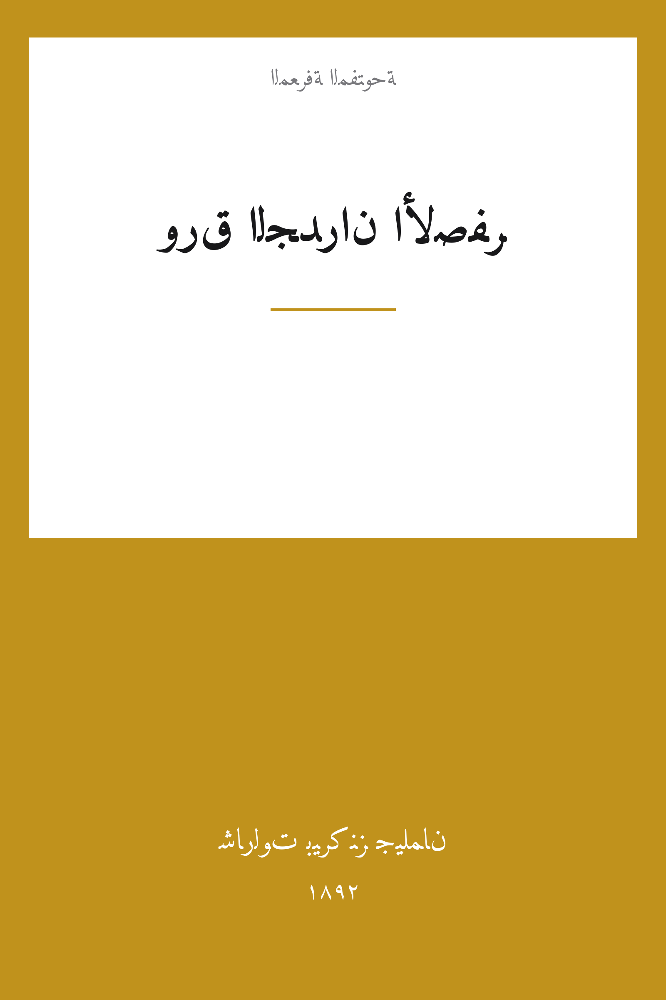

The Yellow Wallpaper
ورق الجدران الأصفر
الطب والصحة
ملك عام
ترجمة كاملة
ورق الجدران الأصفر — القصة الأشهر في تاريخ النقد الأدبي للطب: امرأةٌ كاتبة يفرض عليها زوجها الطبيب «علاج الراحة» التام في قصرٍ مستأجر، سجينةَ غرفةٍ عُلويّة مبطّنة بورق جدرانٍ أصفر نقطته، فتمضي أيامها المسكوتة تراقب النقشَ يتحرك خلفه امرأةٌ تزحف، حتى تلتقي بها. شهادة جيلمان على علاجٍ عانته بنفسها كاد يفقدها عقلها، غيّرت ممارسات طب النفس في شأن النساء. ترجمة كاملة للنص.
| المؤلف | شارلوت بيركنز جيلمان — Charlotte Perkins Gilman |
| سنة النص الأصلي | ١٨٩٢ |
| كلمات المصدر (الإنجليزية) | ٦٢٥١ |
| كلمات الترجمة (العربية) | ٤٣٧٨ |
| مقاطع الترجمة المدققة | ٥ |
| مدة القراءة التقريبية | ≈ ١٠٠ دقيقة |
الترخيص والحقوق: النص الأصلي (1892) في الملك العام. هذه الترجمة العربية منشورة بإذن حر. المصدر: gutenberg.org/ebooks/1952